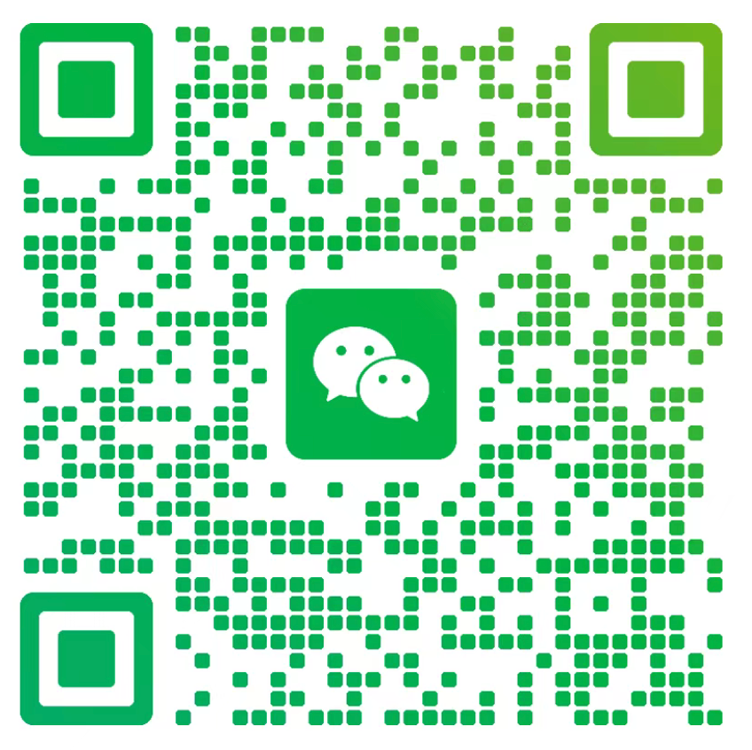

🏷️ 识人知己 · 用人决策
识人用人 TBTI
基于识人知己知识库设计
这不是人格测试。
它测的是：你在识人用人这件事上，天然的决策风格是什么。
4个维度 × 20道题，5分钟测出你的识人代码。
共 20 道情境题 · 4轴16型 · 基于识人知己知识库
你的识人用人类型
🎯 稀有类型
IDBQ
🔥 猎手型
"你招人像猎豹捕食——直觉准、出手快，但你确定追到的真的是猎物吗？"
🎴 你的专属识人卡
识人用人 TBTI
IDBQ
🔥 猎手型
"直觉准、出手快，但你确定追到的真的是猎物吗？"

识人用人TBTI · 基于识人知己知识库 · 4轴16型